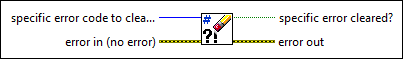

Clear Errors VI
Owning Palette: Dialog & User Interface VIs and Functions
Requires: Base Development System
Resets the error status to no error, code to 0, and source to an empty string. Use this VI when you want to ignore an error. By default, this VI ignores all errors. Wire an error code value to specific error code to clear if you only want to ignore a specific error.

 Add to the block diagram Add to the block diagram |
 Find on the palette Find on the palette |